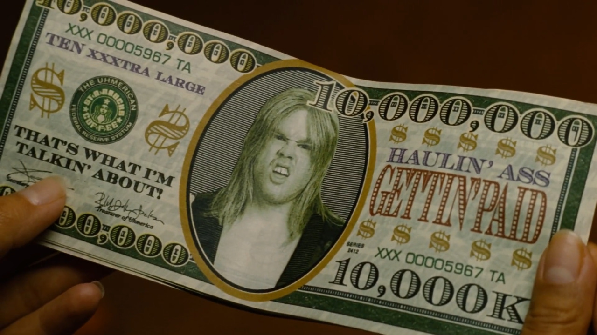

Disregarding all of bitcoin's shortcomings, a financial instrument that brings out the worst in people—greed—won't change the world for the better.
I haven't always been critical about crypto“currencies”. I've bought them, I've earned them, and I've used them. I came for the profit and stayed for the tech profit. I'd be lying if I said otherwise. Though, I did find it fascinating, for a while, after being persuaded that it should be fascinating. Obviously there's technological and academic merit behind it, but far less so than what evangelists try to sell you (). Realizing the extent of its shady, ignorant (), and spam-happy proponents (), I chose to opt out.
Since then it has only gotten worse. Their arsenal now includes dimwitted insults such as “have fun staying poor†or “look at those poor no-coiners†while shooting lasers out their eyes (,). Cool (). This whole ordeal has more in common with predatory multi-level marketing rather than a reasonable investment. Let alone something revolutionary. Truly revolutionary things inspire, they speak for themselves (); I bet the Wright Brothers never bothered to utter “look at those poor no-flyers”. No, they flew. Flew!
—Image: Rare Historical Photos: “Wilbur Wright pilots a full-size glider down the steep slope of Big Kill Devil Hill in Kitty Hawk, North Carolina, on October 10, 1902.†()Conversely, bitcoin doesn't naturally inspire. It requires incessant spam to lure people into the most soulless subject: money. Sure, allegedly being invented to subvert fraudulent contemporary finance or untouchable bankers is a respectable cause I stand behind. But with a modicum of scrutiny one notices that bitcoin (and crypto“currencies†in general) has veered far from its original premise: “A Peer-to-Peer Electronic Cash System†(), i.e., money by the people, for the people, against the banks. For one, its predominant use-case isn't cash but financial speculation, gambling (). Secondly, it desperately needs the banks for normal people to buy it since obtainment through mining on regular PCs has become obsolete. Yes, you can still host your own full node (a keeper of the complete ledger) but that alone wasn't the original intent; it's like buying food you can't eat but being happy you can smell it. So much for democratic and decentralized. Thirdly, early adopters mine or buy large proportions of the total supply at negligible costs while late adopters mine or buy negligible proportions at large costs. It follows that holders immediately have every incentive to get as many people to buy after them. Like stocks? Like stocks, but without the dividends or anything tangible in the real world. Congratulations, you got yourself a pyramid scheme.
Any new “currency†or speculative digital token that doesn't have a fair distribution mechanism is a multi-level marketing pyramid scheme by default. Hence, not a currency. The earliest adopters of such flawed contrivances will always have an increasingly disproportionate amount of the total wealth as it gets adopted. Consequently, don't kid yourself with ethereum or any other speculative token, they're all equally sanctimonious*. That explains the arbitrary fetishism toward any well-known adopter. No matter if they're antithetical to the ideology; high-class lowlife or low-class high roller, the bottom-line is profit. John McAfee's promise to eat his dick goes to show the foresight of the movie Idiocracy. Laissez-faire, am I right? Not quite: “John McAfee indicted on fraud, money laundering charges in pump-and-dump crypto scheme†—Forbes ().
To top it off, it spawned dozens of fraudulent exchanges which have and may still be manipulating the price by buying with exchange-printed fake money (,,). If contemporary finance is fraudulent, and crypto“currencies†are bought with such fraudulent money, what guarantees that the prices reflect true supply and demand? For goodness sake, bitcoin has become the cesspool of greed that got us into this mess in the first place. Bitcoin isn't a cure, it's the same disease: money. Money in the hands of fallible humans.
 —Image: Idiocracy (2006), satirical ten million dollar bill with a redneck as president ().– – – – – –
* The only example of cryptocurrency not being a misnomer is TU Delft's blockchain euro (). But if it is practical remains to be seen, since Africa has superior payment alternatives that don't require blockchain at all—which I address further down.
Have I been salty? Definitely. There's no point in denying that. I could've purchased a home had I been in a coma until now. If I'd have deserved it is something else. Then there's the cognitive dissonance, which means experiencing psychological stress due to having simultaneous contradictory beliefs. The curious thing is, it was present both when I had and didn't have bitcoin. Formerly because I continuously needed to justify holding bitcoin while acknowledging its shady history, its energy and hardware waste, it being a pyramid scheme, it not doing what it was invented for, and lastly, it having a multitude of popular proponents with extreme viewpoints such as “animals have no rights”, or the right to bear arms †which strikes me as vile, unethical, and borderline insane—hence my disappointment and disillusionment in some of these supposedly intelligent people, including (former) academics and current bitcoin developers. Anyway, my cognitive dissonance in the latter case is due to foregoing profit on principle while realizing it could still grow. Because evidently greed and stupidity affects the best of us. Case in point: Isaac Newton. He was a mathematical genius, but also a religious alchemist who invested in the South Sea Bubble (). Moreover, the ultimate irony, Tesla Motors drank the Kool-Aid as well (); the company I initially invested in. Therefore I have no confidence in predicting the course of this mania. I have been right about all my predictions regarding bitcoin, Tesla, and even Non-Fungible Tokens (NFTs), but for all the wrong reasons; had my “investments”* panned out I would've merely been lucky by acting on false assumptions and naive convictions. Bitcoin isn't the be-all and end-all, and neither is Elon Musk, but that's another story ().
– – – – – –
* Using the word investments in this context is incredibly cringy to write.
†Considering its controversial nature I must stress the fact that the right to bear arms as seen in the USA is the exception and not the rule (). Citizens should have no need for firearms in civilized countries.
Greed is the elephant in the room. Whether it's cash, gold, or an NFT of Elon Musk's flatulence, no matter the currency, as long as humans can't evolve beyond their greedy nature nothing will change. All bitcoin has done is strengthen this vice and make yet another group of rich people, who, as usual, will do anything to preserve and increase their wealth. For example Max Keiser ripping a ten dollar bill saying he will just buy politicians (). Or the next quote by some bitcoin millionaire on an online forum I used to frequent:
“I've always used Bitcoin as an insurance against corrupted governments by private companies. The tip is to move to a country where the government is corrupted by crypto holders! 😂 ... and you don't have to move to small island to do that. There is plenty of rich country doing so.†—Name-I-won't-mention, living in France, 2021.
That doesn't spell confidence nor competence for the next “elite”, does it. Neither did I for that matter. As soon as I felt being rich was within my grasp I began to think selfishly: “No way I'm giving any of this to governments.†Which is fine in truly oppressed countries. But if one inhabits a developed country, chances are that being able to afford crypto“currencies†to begin with is the result of the fortunate circumstances that you or your parents enjoyed because of, among other things, good governance. Whether your ego likes it or not, most success is due to luck (). In the end, governments aren't inherently bad, but the people in it can be. And if they can be corrupted by bitcoin then we are merely running uphill on the Titanic.
“Strong currencies are not the solution to poor governance. Good governance and democracy makes a country and its currency strong. Not vice versa.†—halukakin, HackerNews, 2021 ()
So, governments are not without faults, but likewise not the evil bogeymen as many people make them out to be, and neither are bitcoin enthusiasts. I still think most people mean well, but our ideas cannot account for, nor fathom the complexity of it all. Should the US decrease their disproportionally large defence budget?* Most definitely. Will bitcoin stop that? Probably not. Blame is easy, change is hard; and gambling on crypto“currencies†is not hard. It's just playing Monopoly with another currency, without changing the game. Maybe that's it. Maybe they don't want it changed and bitcoin is just a charade. “I don't care if we have new banks, as long as I am rich.†But let's not get lost in speculation here as well. Many bitcoiners, usually libertarians (not to be mistaken with librarians) despise the notion of Universal Basic Income (UBI), yet they have no qualms receiving money by means of a pyramid scheme. Furthermore, the most blatant display of moral bankruptcy is that a large number of already rich blockchain companies applied for and received between $150,000 and $10,000,000 in Covid-19 stimulus loans.
“The loans to blockchain startups are likely to be controversial among cryptocurrency users given the industry’s roots in the liberterian-leaning cypherpunk movement, which distrusted governments and banks. (Satoshi Nakamoto famously embedded a headline about bank bailouts into Bitcoin’s genesis block.) However, not taking an available subsidy arguably might have put any one company at a disadvantage to competitors that did, regardless of what the recipient believes about the policy’s merits, as one industry insider pointed out.†—Coindesk ()()
Socialism for the rich, capitalism for the poor. Go figure. If that's not the epitome of hypocrisy I don't know what is. Both these transfers of wealth do nothing for the less fortunate, the unbanked, or society. Nothing. It widens the wealth gap even more (). Meanwhile, the majority of people in most need of UBI definitely do add value to society. Because after all, they aren't hedge fudge managers.
Relieving humans from having to worry about or deal with money would be an actual Copernican revolution. How that would work is beyond me †, but that's precisely why it would be revolutionary. Copernicus let the world revolve around the sun, bitcoin let everything revolve around ourselves—profit. Think bigger. Do better.
“People mainly lack financial services because they lack income and not the other way around. So, to effectively bank the unbanked, the key problem to solve is how to help people generate more income. This prime factor is ignored by many technologists because when it comes to helping people gain wealth, there is no singular app for that.†—Yaya Fanusie, Forbes, 2021 ()
– – – – – –
* National defence is not necessarily bad, at least until humanity is free from dogma and become truly Cosmopolitan. I recommend the book Einstein: His Life and Universe by Walter Isaacson to relive Einstein's transition from staunch pacifist into a more nuanced one ().
†Perhaps immutable smart contracts that spread wealth in proportion to the number of people, accounting for basic needs and disproportionate wealth disparities? But even then I'd suppose blockchain wouldn't be the most efficient way to do it. [As expected, it didn't take too long for someone to point out how simple it would be, and how redundant blockchain really is: “Remove the smart contract bit, and that's the same as taxation -> UBI, no?†—captn3m0 ()]
Since bitcoin hasn't lived up to its original vision, it caused a periodical shift in narrative and splintering of its early core developers and adherents. Currently its 21 million coins cap is the last remaining “perk”* assuming the code won't be altered. This artificial scarcity might make for an attractive appreciating asset, like postage stamps—because “one man's trash is another man's treasure”—but it does not stop fractional reserve banking. Just as governments went off the gold standard, they can get off the envisioned bitcoin standard. And just as banks lend out money that doesn't exist, exchanges can lend out bitcoin that don't exist, which already happens (). As predicted by one of its earliest pioneers:
“I see Bitcoin as ultimately becoming a reserve currency for banks, playing much the same role as gold did in the early days of banking. Banks could issue digital cash with greater anonymity and lighter weight, more efficient transactions.†—Hal Finney ()
While his prescience is eerily accurate and impressive, it lacks imagination. The irony is that this envisioned system breeds the same environment that led to the 2008 financial crisis, which instigated the development of bitcoin.
My point here is not that fractional reserve banking is fundamentally bad. I don't think it is. My point is that if fractional reserve banking is good then bitcoin is redundant. Whereas if fractional reserve banking is bad then bitcoin is redundant as well because it does not prevent it. Once more, prosperity boils down to good policy and governance.
– – – – – –
* Out which grew the popularized yet unproven and likely spurious stock-to-flow model ().
Avoiding inflation is something that instinctively feels right. Let's say you had 10000 in savings, while earning 1000 a month. If due to inflation your savings buy only 9000 worth of stuff, you basically worked a month for free. That rubs me in the wrong way as well. However, things aren't so cut-and-dry (), no matter how much you want them to be (or I wanted them to be). While saving is a virtue, hoarding isn't. And there's a thin line between the two; prudence can turn into greed remarkably quick. To make my case, I've often wondered if there would be significant technological progress as we see today, lifting millions from poverty, on a deflationary currency. While rummaging the Web I discovered that this inflation vs. deflation or Keynesian vs. Austrian debate isn't novel at all. In fact, one of the most reverberating speeches in US history by William Jennings Bryan was centered around this very same topic. Here's an excerpt from his Cross of Gold speech:
“Here is the line of battle. We care not upon which issue they force the fight. We are prepared to meet them on either issue or on both. If they tell us that the gold standard is the standard of civilization, we reply to them that this, the most enlightened of all nations of the earth, has never declared for a gold standard, and both the parties this year are declaring against it. If the gold standard is the standard of civilization, why, my friends, should we not have it? So if they come to meet us on that, we can present the history of our nation. More than that, we can tell them this, that they will search the pages of history in vain to find a single instance in which the common people of any land ever declared themselves in favor of a gold standard. They can find where the holders of fixed investments have.†—William Jennings Bryan, Cross of Gold, 1896 (,)
I'll leave the apotheosis for you to read. In the meantime, let's compare it with a 21st century supporter of the gold standard—and remember that Elon Musk took advice from this guy:
“#Bitcoin is a swarm of cyber hornets serving the goddess of wisdom, feeding on the fire of truth, exponentially growing ever smarter, faster, and stronger behind a wall of encrypted energy.†—Michael Saylor, Twitter, 2020 (,)
Did you remember that Elon Musk took advice from this guy? That's where your money goes folks. Please. Let's learn from history and not jump the gun on fossilizing civilization by blockchain and artificial scarcity. There's plenty of pie for everyone. We just need to cut down on the sugar and slice like Euclid would.
Let's take a quick break with a side note on Decentralized Finance (DeFi) () and Non-Fungible Tokens (NFTs), the latest fads. Rest assured, it's all still about shameless profit through financial shenanigans and selling snake oil to the struggling or credulous from which only the lucky or already popular ones will benefit. It cons artists into buying crypto“currencies†because that's what they need to setup an NFT. It cons customers because, as Josh Millard aptly describes: “you're paying for a receipt that says "i paid money" and that's it†(). Bill Hicks would've had a field day with these “tokenize everything†charlatans:
“You scumbags. Quit putting a goddamn dollar sign on every fucking thing on this planet.†—Bill Hicks
—Stand-up comedy fragment: Revelations (1993), Bill Hicks on marketing and advertising ().Granted, if all energy production was carbon neutral, it wouldn't be so much of a problem, in a vacuum. However, it isn't carbon neutral (), and will never be in a vacuum. Bitcoin evangelists claim that the advantages of sound money* far outweigh the disadvantages of its energy consumption. But I have yet to see it produce anything other than the Jehovah's witnesses of bitcoin, rich snobs, and shotgun investors frantically aiming for a tenbagger in the hopes of joining the ranks of latter. Again: “good†money doesn't produce good people.
“If you have selfish, ignorant citizens, you're gonna get selfish, ignorant leaders.†—George Carlin
I'd even go so far as comparing bitcoin to cancer, metastasising and consuming energy, generating detrimental practices and toxic personalities. Simply because cancer occurs naturally doesn't mean we shouldn't treat it. In the same vain, sometimes the “free market†just screws up, requiring intervention. And that's okay. Consequently, we shouldn't be okay with something so noisy and wasteful just because we can—greed—or because other industries do so too—whataboutism. For supposed geeks and technologists they sure lack the vision and virtue. Intentional upgrade reluctance and general inefficiency just strikes me as idiocy; no wonder Bjarne Stroustrup dislikes his extremely efficient C++ being used for the extremely inefficient bitcoin (). Alas, just as in cheap porn scripts: “money talks”, and these bitcoiners are no exception. But perhaps that's neither here nor there.
There is an argument to be made that crypto“currency†mining can be used in nuclear power plants—which are safe and carbon neutral ()—to make the plants' surplus base load energy profitable (). However, a morally superior use-case for this excess energy would be desalination (); making sure everyone has access to fresh water, an increasingly scarce resource. Honestly, and I'm going off on a tangent here, our rise from poverty and abundance of luxury has and continues to be possible through the exploitation of third world countries, child labour, factory farming, and so on. Yet we have the audacity to waste water, invent artificial scarcity, implement planned obsolescence, and to tell developing countries not to do what we do because we are already polluting too much. Then you have these tone-deaf millionaires going around imposing their preferences, like Twitter's Jack Dorsey and Jay-Z investing 500 bitcoin toward bitcoin development in Africa which will supposedly empower its population (). Vested interests anyone? This is soberingly reminiscent of the Roundabout PlayPump experiment in which merry-go-rounds were installed in Africa so kids would simultaneously pump water from the ground while playing (). Who could've thought that would end up as forced labour of children and women. How about just giving water or money directly †instead of some pretentious idea to pat yourselves on the back and not feel guilty about being a parasite.
“People who dismiss the unemployed and dependent as ‘parasites’ fail to understand economics and parasitism. A successful parasite is one that is not recognized by its host, one that can make its host work for it without appearing as a burden. Such is the ruling class in a capitalist society.†—Jason Read
As already mentioned, imposing technology doesn't work; struggling people know their needs far better than anyone. On the contrary, it seems that the “developing†countries should be telling us what do:
“The East African region has cemented its position in the digital economy as the global leader with the highest penetration rate of mobile money in the world.†—Daily Monitor (2021)()
“Finally, a number of telcos have managed to develop a superior client experience early in the evolution of mobile financial services in Africa. M-Pesa’s client experience is remarkably simple: it takes only three inputs and six clicks to send funds, on any type of handset. Registration is straightforward; merchant acceptance is widespread, and there are no transaction fees on bill payments.†—McKinsey (2017)()
All without blockchain. Who would've thunk? For first world countries we sure think third-rate.
– – – – – –
* “Sound money: money not liable to sudden appreciation or depreciation in value : stable money†―Merriam-Webster.
†Giving money directly is the most efficient method that actually works. I recommend Utopia for Realists: How We Can Build the Ideal World by Rutger Bregman () and the philosophy of effective altruism ().
There is no money problem but a human problem. Harbouring vested interests lets the mind reason its way out of glaring flaws by any means necessary. Just as religion, bitcoin requires suppression of rational thought and adherence to dogma. This is why bitcoin corrupts, absolutely. No amount of wealth or technology will turn vice into virtue. So, change yourself to change the world (). “But what about the assholes?†First, look into the mirror. Second, to remedy financial fraud we have to fine the culprits excessively and throw them in jail. Lest we want trial by pitchforks (). Curbing greed will take time and collective effort. It is a symptom of a sick society in which “Fulfillment by Amazon†tries to replace fulfillment by vocation. Reduced to a number, many a look for a golden ticket. Therefore, GDP* needs to yield for UBI; the economy should serve humanity and nature, not the other way around.
“One of the first conditions of happiness is that the link between Man and Nature shall not be broken.†―Leo Tolstoy
—Image: Grave of the Fireflies (1988), Setsuko by a pond ().– – – – – –
* “Gross domestic product (GDP): total market value of the goods and services produced by a country’s economy during a specified period of time.†―Britannica.
“Tulip mania reached its peak during the winter of 1636–37, when some bulb contracts were reportedly changing hands ten times in a day. No deliveries were ever made to fulfill any of these contracts, because in February 1637, tulip bulb contract prices collapsed abruptly and the trade of tulips ground to a halt. The collapse began in Haarlem, when, for the first time, buyers apparently refused to show up at a routine bulb auction. This may have been because Haarlem was then suffering from an outbreak of bubonic plague. The existence of the plague may have helped to create a culture of fatalistic risk-taking that allowed the speculation to skyrocket in the first place; this outbreak might also have helped to burst the bubble.†—Wikipedia ()
Hmm…
♔
Comments.
HackerNews: 26447771, Reddit: mj6ldy.
You can use your Mastodon account to reply to this post.